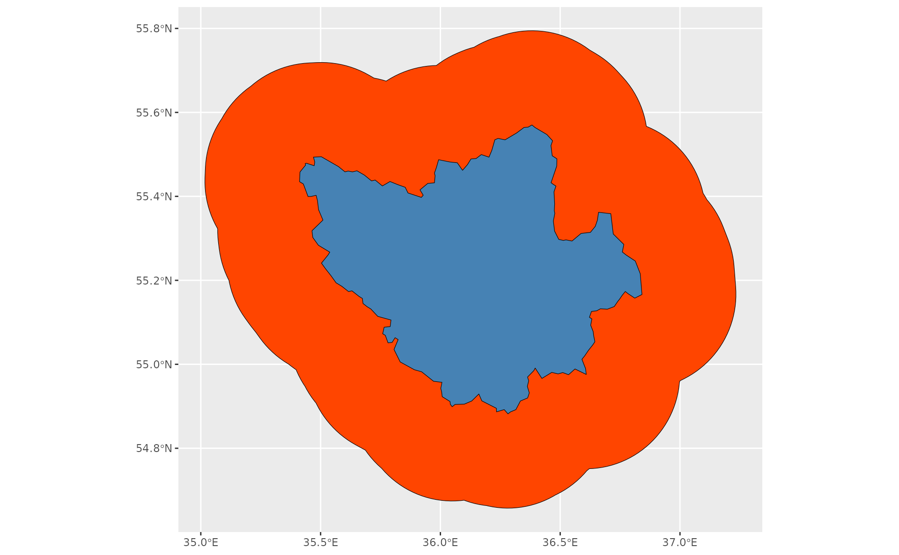

Generate the buffer of spatial object in geographic coordinates. The function transforms the object into Azimuthal equidistant projection, then buffers it by the specified radius and then reprojects into geographical coordinate system (WGS84)
Arguments
- g
sforsfgobject with known coordinate system.- bufsize
Numeric value of a buffer distance, in meters.
Examples
if (require("sf")) {
library(grwat)
library(ggplot2)
path = system.file("extdata", "spas-zagorye.gpkg", package = "grwat")
basin = sf::st_read(path, layer = 'basin') # read basin region
basin_buffer = gr_buffer_geo(basin, 25000)
ggplot() +
geom_sf(data = basin_buffer, fill = 'orangered', color = 'black') +
geom_sf(data = basin, fill = 'steelblue', color = 'black')
}
#> Loading required package: sf
#> Linking to GEOS 3.8.0, GDAL 3.0.4, PROJ 6.3.1; sf_use_s2() is TRUE
#>
#> Attaching package: ‘sf’
#> The following object is masked from ‘package:transformr’:
#>
#> st_normalize
#> Reading layer `basin' from data source
#> `/home/runner/work/_temp/Library/grwat/extdata/spas-zagorye.gpkg'
#> using driver `GPKG'
#> Simple feature collection with 1 feature and 7 fields
#> Geometry type: MULTIPOLYGON
#> Dimension: XY
#> Bounding box: xmin: 35.41204 ymin: 54.88195 xmax: 36.84138 ymax: 55.57005
#> Geodetic CRS: WGS 84
